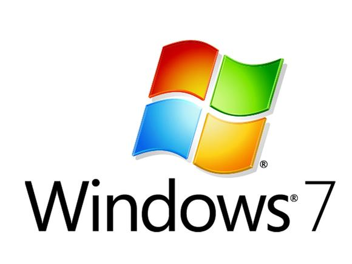

Intro duction
Welcome to the Second part of the assignment on how to protect data confidentiality
Tools
Windows OS

The Windows Operating System contains a number of security features that can enable improved and granular access control to files and folders present in the system. By leveraging Access Control Lists, a user can specify which other user accounts can have access to her files as well as the privileges they have upon them (e.g. view, modify or even delete).
Truecrypt
Truecrypt is a free disk encryption software that enables a user to either encrypt the disk partition where the operating system is installed or create a container inside the running Operating System where files are stored in an encrypted form
Tasks
Perform the following tasks.
- Click on the Windows Start button (bottom-left of your screen) and press on the 'Control Panel' option.
- Press the 'Add or remove user accounts' option and subsequently on the 'Create a new account' option.
- Specify an Account Name, leave the 'Standard user' option enabled and press the 'Create Account' button.
- Navigate to the C: root folder and create a new text file on your desktop, name it as you prefer and populate with some text and save it.

- Click on the Start Button again and select the Switch User option as shown below.

- Log in with the User Account you created in the previous step. Each User Account gets their own personal desktop view.
- Navigate again to the C: root folder and verify that you can open and view the contents of the file you have created in the previous steps. Verify that you are also able to modify the contents of the file and overwrite its previously saved state
- Switch again back to the 'student' user account and login to the desktop
- Navigate again to the file's location, right click on the file and select Properties
- Switch to the Security tab. In this dialog, Windows is displaying which user groups and user accounts have access rights to the file. By clicking on an entry, the middle pane is presenting in detail which tasks the user or the group is allowed to perform on the file.

- Click on the Edit button in order to modify the security settings.Click on the Add button. In the new dialog that appears, write the name of the User account you created previously and press the Check Names button. You should have a result similar to the image below. Press OK to proceed.

- Make sure to uncheck all the checkboxes under the Allow column while explicitly enable the Deny checkbox for the Write action. Press the Apply button and after reading the displayed warning, accept and proceed.
- Switch back to the other user account. Open the file and view its contents. Attempt to modify the contents of the file (e.g. add a new sentence) and save it by overwriting the existing file. You should receive an Error message notifying you that 'Access is Denied'
- Switch back to the 'student' user account.
- Due to the complexity that such an access control system may rise to in case of multiple user accounts, group and user-to-group memberships, Windows provides an easier way to inspect the exact rights that a user has on a file. Right click on the file and select Properties and subsequently the Advanced button in the Security tab. In the Effective Permissions tab, you can specify the user account as previously and examine the permissions it is allowed to perform in detail

Tasks
Perform the following tasks.
- Create a text file and save it after populating it with some text data. You can examine the contents of the file with a hex editing tool like HxD. Launch the HxD application and click on the Open menu option under the File menu. Select the file and examine its contents. The text contents can be easily accessible by anyone that can access the system (e.g. leaving the physical system unattended for a period of time or an attacker managing to get remote access to the system). In order to protect the confidentiality of the data it is a good practice to encrypt them. There are several cryptographic solutions that vary in the scope (e.g. application specific like Office password-protected files, Operating System specific like Microsoft BitLocker or platform-agnostic like TrueCrypt).
- Run the TrueCrypt application. A shortcut to the application can be found on the Desktop.
- Click on the Create Volume button, select the 'encrypted file container' option and press Next.
- Select the 'Standard TrueCrypt volume' and press Next.
- Specify a name and your preferred location where to store the container file.
- In the next dialog, you can choose your preferred encryption and hashing algorithms. The default options are well-accepted standards so you can proceed by pressing Next.
- Specify a preferred volume size (e.g. 10MB) and proceed by pressing Next
- Specify a password, press Next and finally press the Format button.
- You should be able to view a newly created file by the name and in the location you have specified previously.

- Return to the TrueCrypt application and click on the 'Select File...' button.Select the previously generated file, press Open, select a Drive letter from the top pane and finally press the Mount button. Enter the specified password and press OK. Now the container file has been mounted as an extra 'virtual' disk to your system as shown below

- Navigate to the designated location.
- When finished, dismount the container file and close the TrueCrypt application
- You can examine the contents of the container file with a hex editing tool like HxD. Launch the HxD application and click on the Open menu option under the File menu. Select the TrueCrypt generated container file and examine its contents.